Canela, rolls de canela en Palermo
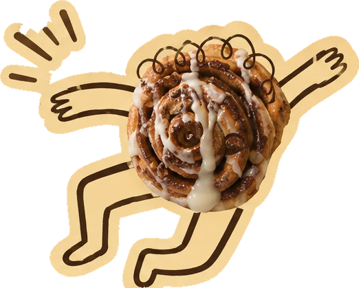
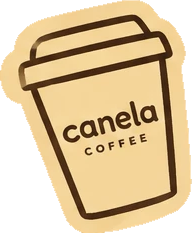
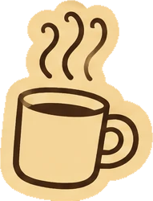
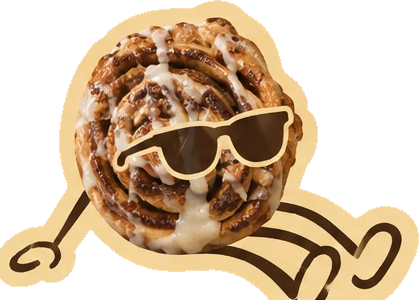
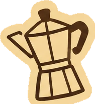
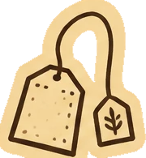
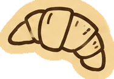
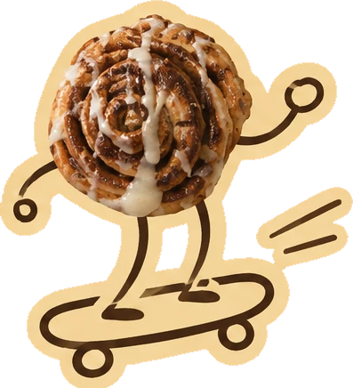
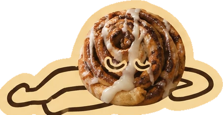
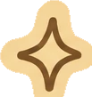
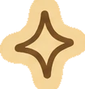
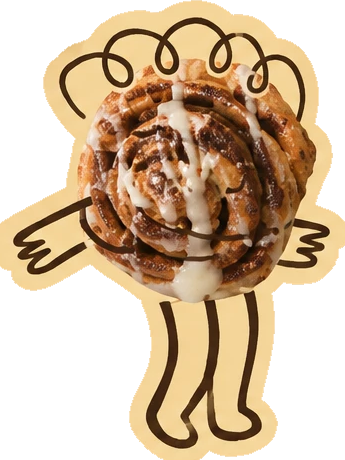
Shop online →Así es el local
Honduras 4821, Palermo Soho · Martes a domingo de 8 a 20 h. Cómo llegar →
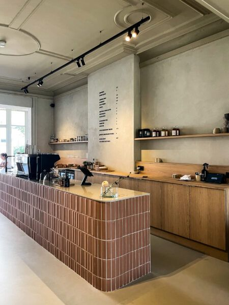


Canela nació en Palermo a partir de una obsesión muy simple: hacer el roll de canela que siempre quisimos encontrar.
Después de muchas pruebas, masas, rellenos y cafés, abrimos nuestro propio lugar para compartirlo.
Conocé nuestra historia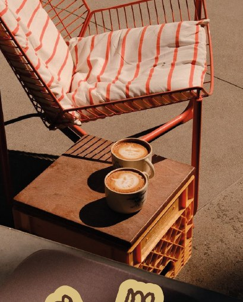